The photographer Polina Washington uses rich, expressive color. Her work shows both strong contrast colors and soft transition colors.
Polina Washington likes to shoot against the light. She lets light hit the subject from the side and back. This creates a soft, dreamy mood. Her method gives her work a poetic, imaginative feel.
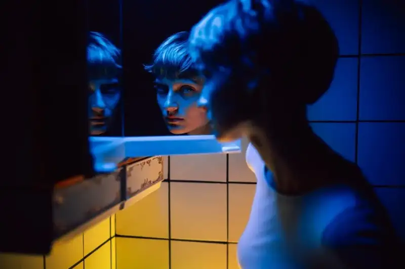
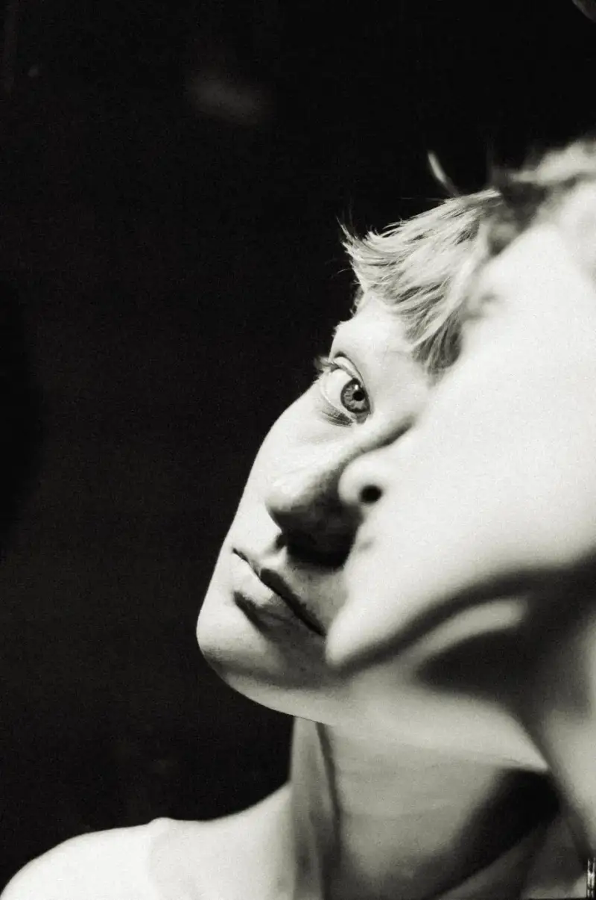
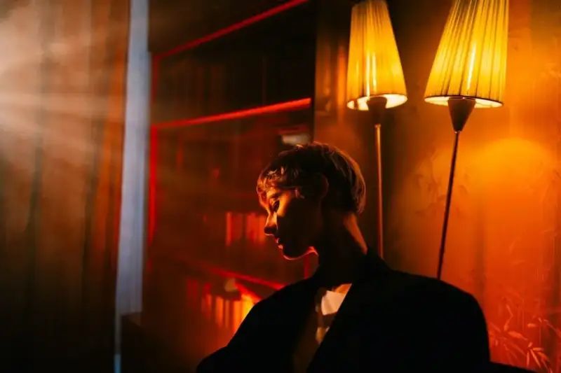
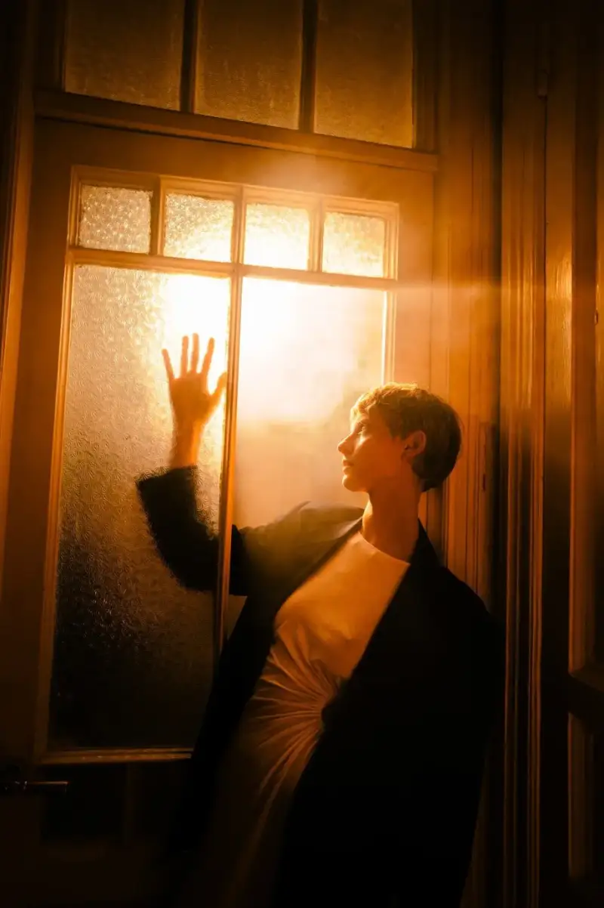
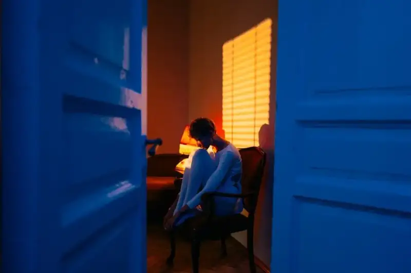
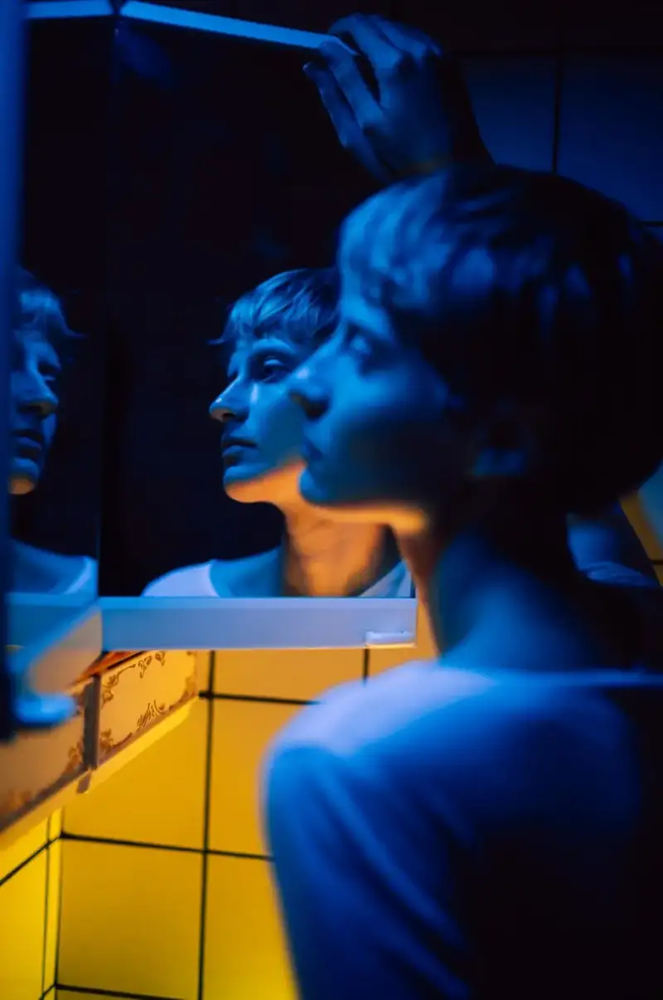
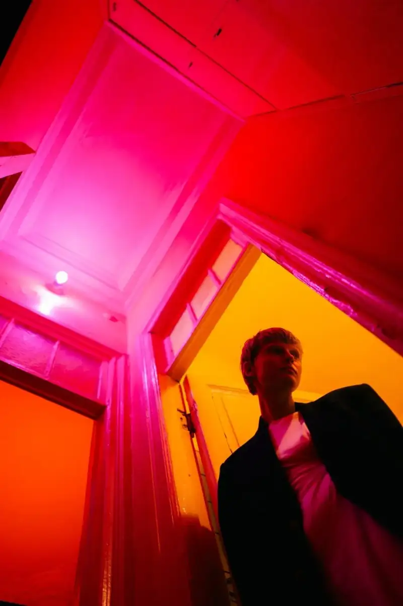
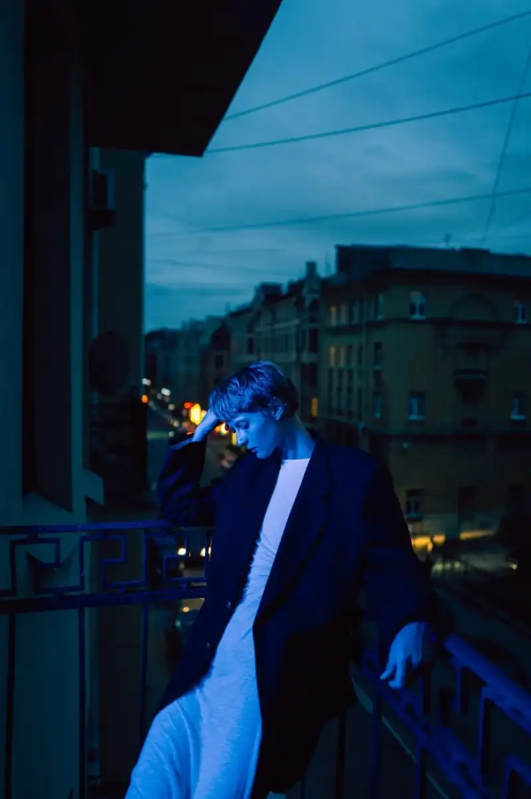
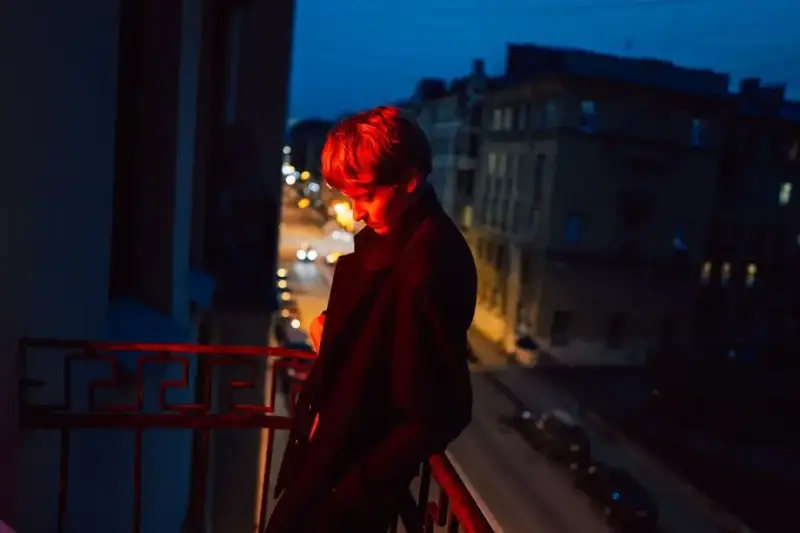
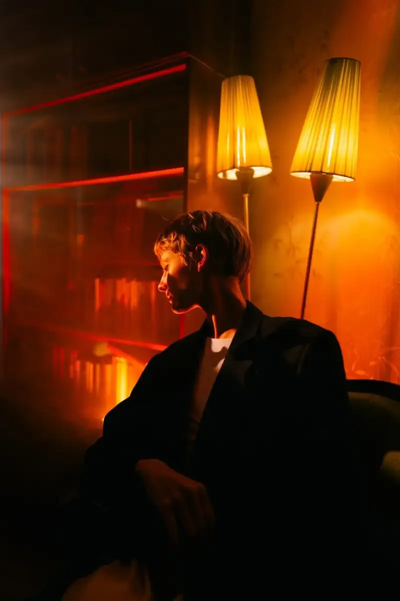
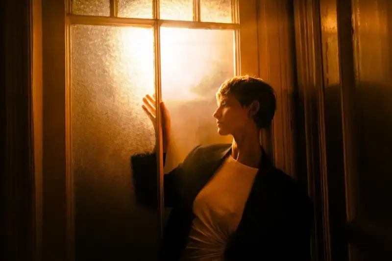
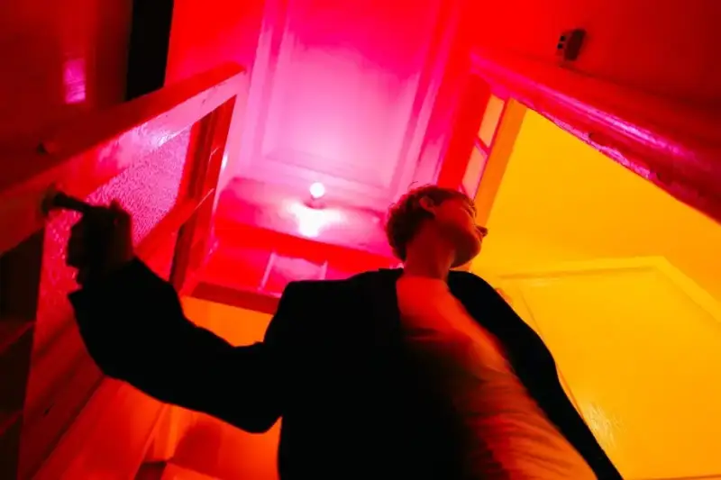
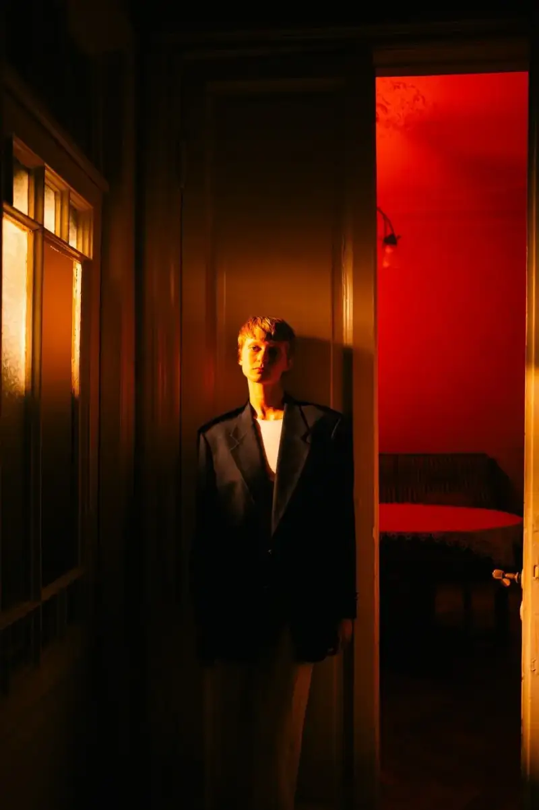
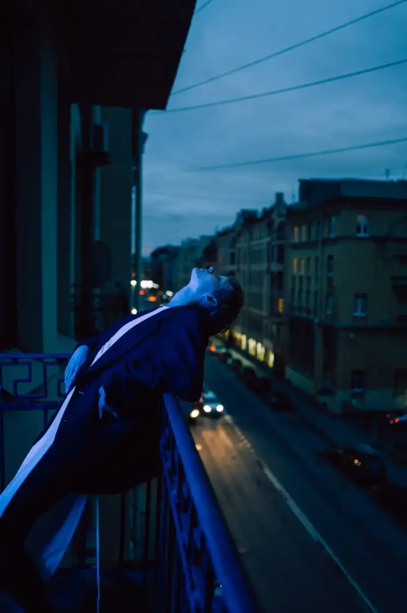
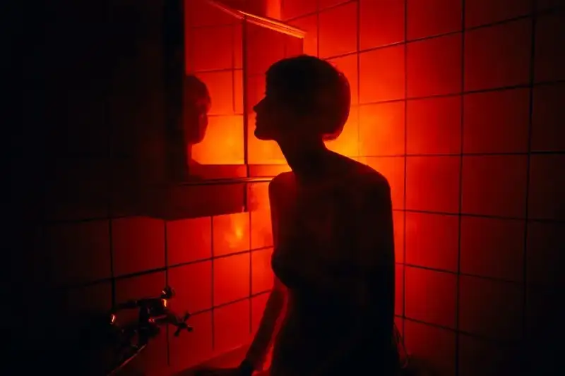
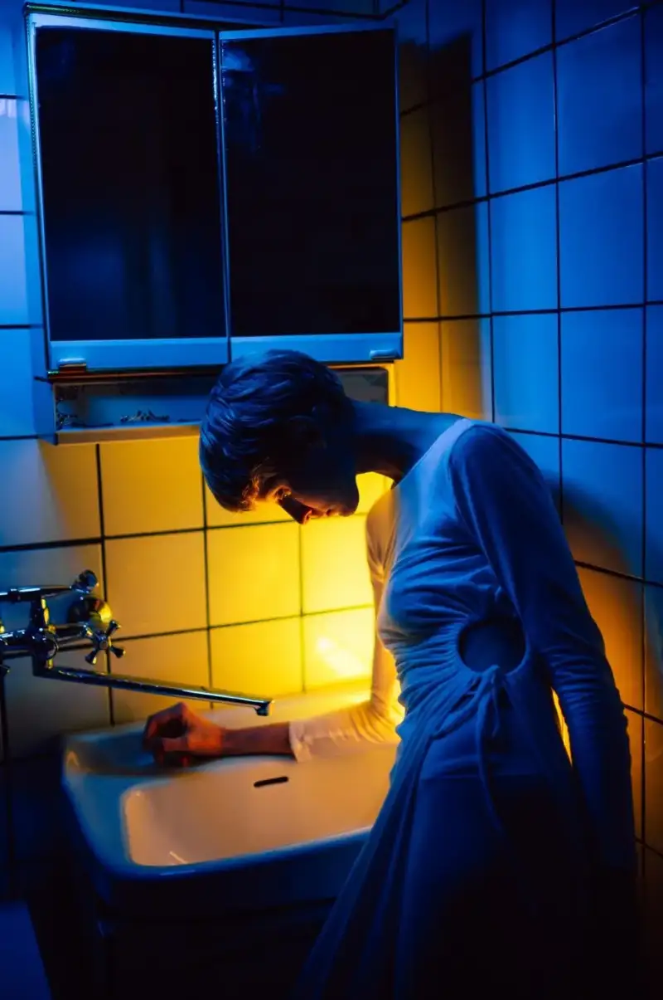
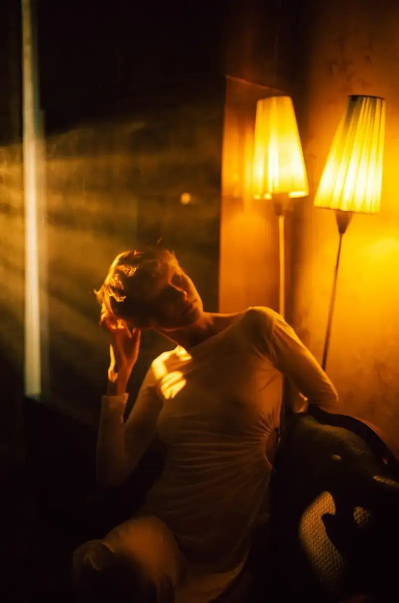